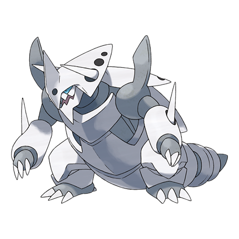

Ele come minério de ferro – e às vezes trilhos de trem – para construir a armadura de aço que protege seu corpo. Lairón
Os Lairon vivem em montanhas repletas de água mineral e minério de ferro, por isso esses Pokémon frequentemente entraram em conflito com humanos no passado.
Aggron tem um chifre afiado o suficiente para perfurar grossas chapas de ferro. Ele derruba seus oponentes batendo neles com o chifre primeiro.

Som do Aggron
Aggron reivindica uma montanha inteira como seu próprio território. Ele bate impiedosamente em qualquer coisa que viole seu ambiente. Este Pokémon patrulha vigilantemente seu território o tempo todo.